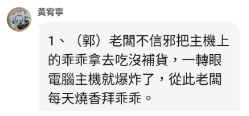
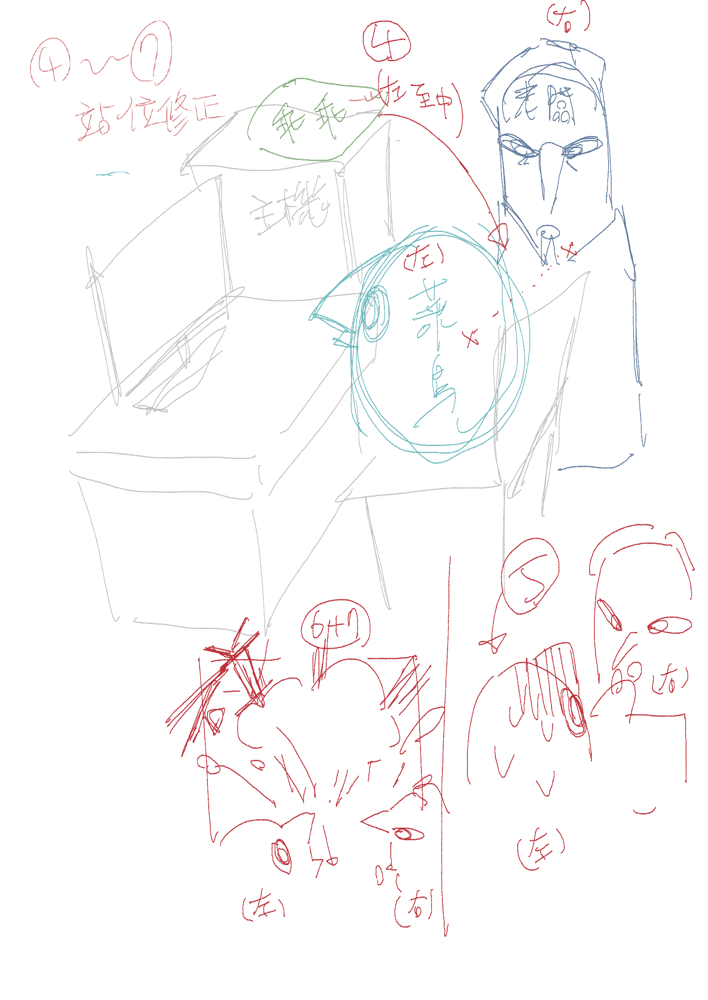
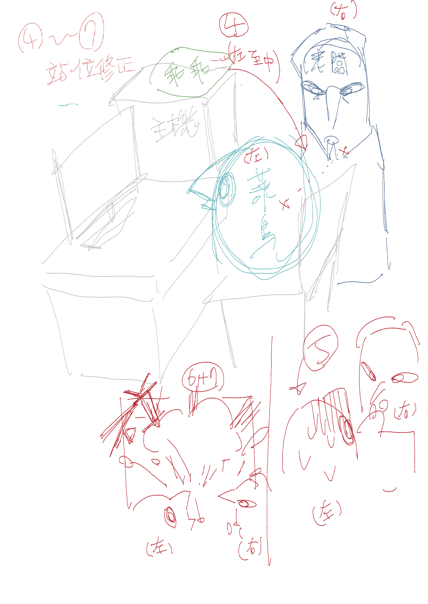
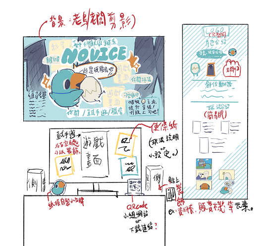
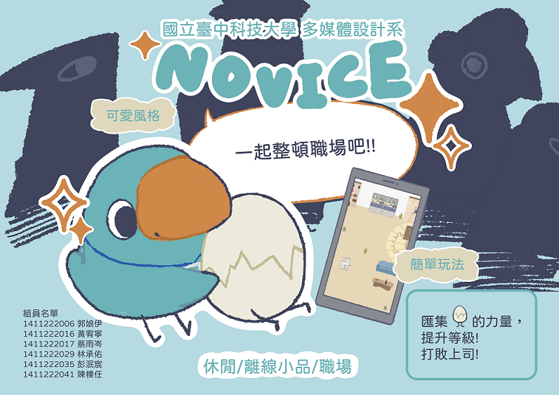
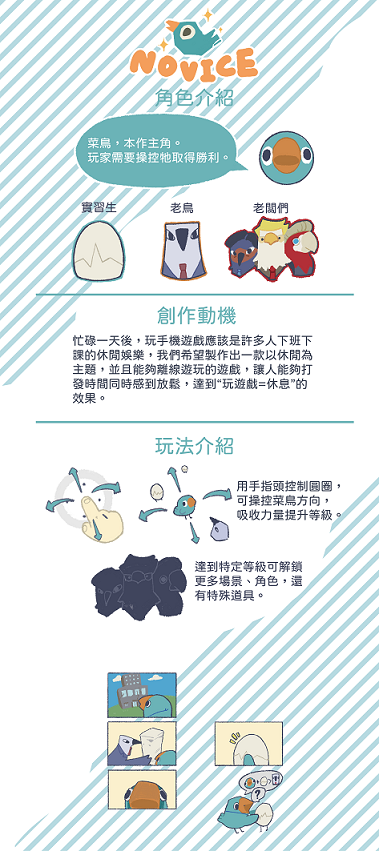

|
（左圖為最終成品，右圖為草稿） |
負責項目
（左圖為最終成品，右圖為草稿）
|
片長00：53整體為獨立完成（*：劇本有參考小組討論內容，過程中組員及老師提供修改意見。）
|
|
川普-彩蛋動畫 馬斯克-彩蛋動畫
負責分鏡至完成（*：劇本由其他組員負責撰寫。） 郭台銘-彩蛋劇本 負責撰寫故事劇本，以及繪製一些畫面參考圖。（*：非正式分鏡）    回目錄 |
|
個人預告片提案 回目錄 |
|
個人海報/展場設計  回目錄 |
| 回首頁 |